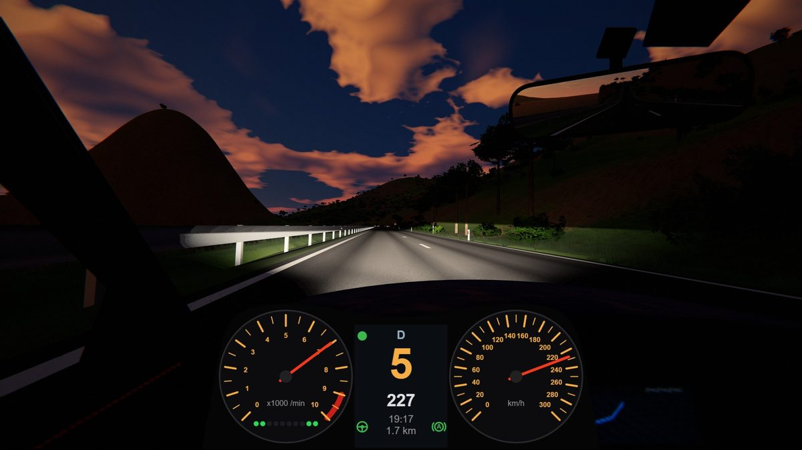
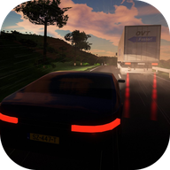

Overtake it!
Racegame · Android en browserEen racegame over inhalen: lange tweebaanswegen, een vrachtwagen voor je, tegenliggers, en die ene seconde dat de andere baan vrij is. 30 banen, regen, mist en sneeuw, een baaneditor en replays met tv-camera's.